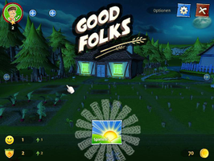
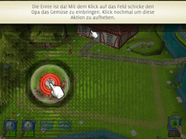
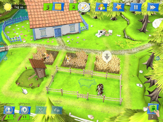
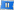

Goodfolks
Dieser Artikel wurde für die folgenden Ubuntu-Versionen getestet:
Ubuntu 16.04 Xenial Xerus
Zum Verständnis dieses Artikels sind folgende Seiten hilfreich:
Desura bedienen, optional
Einen Editor öffnen, optional
Goodfolks 
 - Im Nachfolger von Family Farm stellt man sich der Herausforderung ein verlassenes Dorf wieder zum Leben zu erwecken. Die Einwohner kamen in dieses Land und suchten einen schönen Ort zum Leben und Arbeiten. Felder, Obstgärten und Weideland müssen erschlossen und bewirtschaftet sowie das Dorf und seine Umgebung aus dem Dornröschenschlaf erweckt werden...
- Im Nachfolger von Family Farm stellt man sich der Herausforderung ein verlassenes Dorf wieder zum Leben zu erwecken. Die Einwohner kamen in dieses Land und suchten einen schönen Ort zum Leben und Arbeiten. Felder, Obstgärten und Weideland müssen erschlossen und bewirtschaftet sowie das Dorf und seine Umgebung aus dem Dornröschenschlaf erweckt werden...
Grafikkarten mit Intel-Chipsatz werden nicht unterstützt.
|  |  |  |
| Menü | Tutorial | Spielszene |
Installation¶
Desura¶
Nachdem man das Spiel über die Internetseite oder den Client erworben hat, kann das Spiel installiert [3] und über diesen gestartet werden.
Updates¶
Updates werden, spätestens einige Tage nach der Veröffentlichung, über den Client zur Verfügung gestellt.
Herstellerseite¶
Nachdem man das Spiel über goodfolksgame.com  erworben hat, erhält man per Email den Link um das Spiel herunterzuladen. Die Datei Goodfolks.tgz entpacken [1] und den Ordner Goodfolks an die gewünschte Stelle verschieben - z.B. nach ~/Spiele/.
erworben hat, erhält man per Email den Link um das Spiel herunterzuladen. Die Datei Goodfolks.tgz entpacken [1] und den Ordner Goodfolks an die gewünschte Stelle verschieben - z.B. nach ~/Spiele/.
Um einen Menüeintrag zu erhalten, wird im Spieleverzeichnis das Skript Goodfolks ausgeführt [2]:
./Goodfolks
Das Spiel ist anschließend unter "Anwendungen -> Spiele" zu finden.
Updates¶
Für Updates regelmäßig die Herstellerseite aufrufen um Neuerungen in Erfahrung zu bringen. Sofern eine neue Version verfügbar ist kann man diese von der persönlichen Seite herunterladen und erneut installieren. Alte Spielstände werden nicht überschrieben.
Konfiguration¶
Über  "Pause" und "Optionen" gelangt man zu den Einstellungen. Hier kann die Auflösung sowie das Audioverhalten angepaßt werden. Zusätzlich es ist möglich hier die Spielsprache zu ändern und zwischen Vollbild- / Fenstermodus zu wählen.
appconfig.cfg¶
Nach dem ersten Start werden im Homeverzeichnis unter ~/.config/Goodfolks/ die Konfigurationsdateien angelegt.
[ogre] render_system=OpenGL Rendering Subsystem screen_width=800 screen_height=600 colour_depth=32 fullscreen=false fsaa=0 monitor=0 usepbuffers=false vsync=true [user] uuid=dev slots=1 language=de interstitial=RevMob sound=true volume=100 mouse=4 cursor=true scrolling_sensitivity=20 tutorial=true fps_limit=30 split_tests=BreakLock~PC&BreakTime~30&SeasonTime~5&SeeLockedAreas~true&

Infobox¶
| Goodfolks | |
| Genre: | Bauernhof-Simulation |
| Sprache: |   |
| Veröffentlichung: | 2012 |
| Publisher: | Hammerware, s.r.o. |
| Systemvoraussetzungen: | 1.6 GHz Pentium® 4 / AthlonT XP 2000+ / 1 GB RAM / 200 MB HDD |
| Medien: | Download |
| Strichcode / EAN / GTIN: | - |
| Läuft mit: | nativ |
- Erstellt mit Inyoka
-
 2004 – 2017 ubuntuusers.de • Einige Rechte vorbehalten
2004 – 2017 ubuntuusers.de • Einige Rechte vorbehalten
Lizenz • Kontakt • Datenschutz • Impressum • Serverstatus -
Serverhousing gespendet von